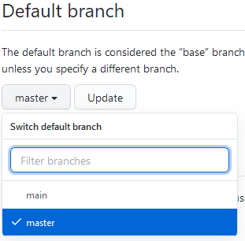

Zet je website online met GitHub Pages
Wat is GitHub?
(Bron en meer info: https://programmeerplaats.nl/wat-is-github/)Veel programmeurs wereldwijd maken gebruik van de website GitHub, momenteel zelfs meer dan 40 miljoen. Zelf zal je er misschien ook wel van gehoord hebben. GitHub bestaat uit twee woorden, namelijk Git + Hub. Laten we beginnen met Git.
Git is een open source versiebeheersysteem. In een versiebeheersysteem kunnen programmeurs projecten beheren met code. Het is mogelijk om verschillende versies te beheren en eventueel terug te vallen op een oude versie, mocht er iets misgaan. De website GitHub is gemaakt op basis van het versiebeheersysteem Git. Met GitHub heb je alle mogelijkheden van Git + extra features. Volgens veel programmeurs is Git momenteel het beste versiebeheersysteem, daarom is GitHub ook zo populair.
Stel dat je met een team een app wilt programmeren. Dan is het handig als iedereen bij het project kan met daarin alle code van de app. Ook is het handig dat iedereen de laatste code wijzigingen ziet van teamleden en daar eventueel op kan reageren en/of het aanpassen.Maar waar staat “Hub” voor in GitHub? Met “Hub” wordt eigenlijk het centrale deel bedoeld, waar alle projecten samenkomen die beheerd worden met Git. De website GitHub is de centrale plek waar programmeurs hun projecten beheren met Git.
Nu eerst nog een paar belangrijke termen:
- Repository Een repository kan je zien als de hoofdmap van je project. Hierin staan alle bestanden van je project en de historie van wijzigingen die je hebt gedaan.
- Branch Aparte plek binnen je repository, waar je bijvoorbeeld nieuwe code kan testen, zonder dat te hoeven doen op de “productversie”.
-
Master Dit is de hoofdbranch, oftewel de “productversie” van je project.
Nieuwe code die is getest en goedgekeurd, wordt samengevoegd met de Master branch.
Een tijdje geleden is het woord master vervangen door het woord main, omdat master te veel aan slavernij doet denken. (Geen grap.) Wij moeten de main branch weer wijzigen in master, omdat het anders niet werkt.
Wat is GitHub Pages?
Met GitHub is het ook mogelijk om je eigen website te hosten. Hoe dat moet, lees je in het volgende stappenplan.
-
Maak een account op https://github.com
- Klik op Sign up
-
Belangrijk! Kies je leerlingnummer (gc + 7 cijfers) als je gebruikersnaam.
Zo kan de docent je account gemakklijk vinden.
- Klik op Create Account.
-
Op de volgende pagina kun je nog wat informatie over jezelf aanklikken.
Daarna moet je nog je e-mailadres verifiëren.
-
Maak een nieuwe repository met de naam gc1234567.github.io,
waarbij gc1234567 precies overeenkomt met je eigen gebruikersnaam. Dat is heel belangrijk, want anders werkt het niet!

-
Klik op de volgende pagina in het vak Quick Setup op Uploading an existing file.

-
Sleep alle bestanden van je website vanuit de (Windows) verkenner naar het grote vak of klik op Choose your files om de bestanden naar je repository te uploaden.
- Klik op Commit changes
-
Nu moet je een nieuwe branch genaamd master maken en de oude branch (main) verwijderen.
Dat gaat zo:-
Klik op het knopje met de tekst Main.
-
Typ het woord master in het vak waarin staat "Find or create a branch".
Klik dan op Create branch: master from main.
-
Klik nu op 2 branches.
-
Klik op Change default branch
-
Verander main in master en klik op update.
 -
Klik I understand, ...
-
Klik op Code, dan weer op 2 branches.
-
Verwijder de main branch door op het prullenbakje te klikken.
-
Klik op het knopje met de tekst Main.
-
Klaar! Je website is nu te bereiken via <je gebruikersnaam>.github.io.
(Het kan overigens nog wel een paar minuutjes duren voordat het werkt.) -
(Aangepaste) bestanden toevoegen gaat via Add file en dan Upload files.